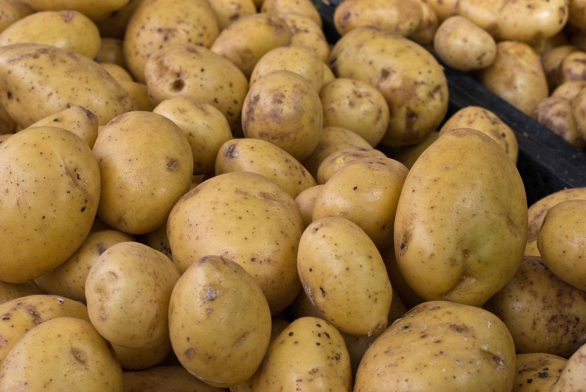

Alimentos Ricos en Potasio

Plátano
Rico en potasio y ideal para evitar calambres musculares.
Espinaca
Llena de potasio y nutrientes que favorecen la salud ósea.

Patata
Una excelente fuente de potasio en la dieta diaria.
Aguacate
Rico en potasio y grasas saludables para el corazón.
Sandía
Hidratante y rica en potasio, ideal para los días calurosos.
Zanahoria
Repleta de potasio y beneficios para la salud visual.
Frijoles
Alto en potasio y proteínas, ideal para fortalecer los músculos.

Salmón
Contiene potasio y omega-3 para la salud cardiovascular.

Naranja
Rica en potasio y vitamina C, ideal para el sistema inmune.

Agua de Coco
Excelente para rehidratarse y rico en potasio natural.
Calabaza
Llena de potasio y otros nutrientes para la salud ósea.
Pimientos
Ricos en potasio y antioxidantes para la salud celular.